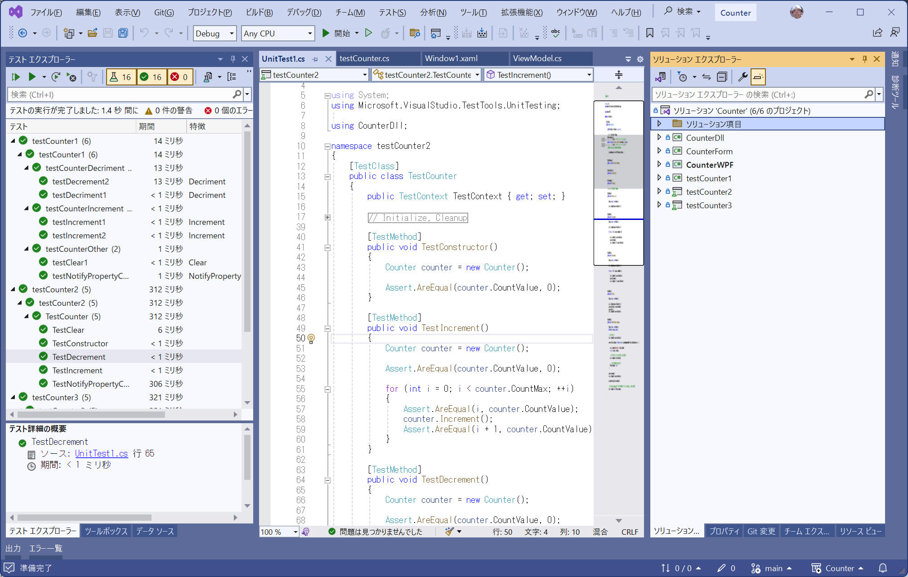
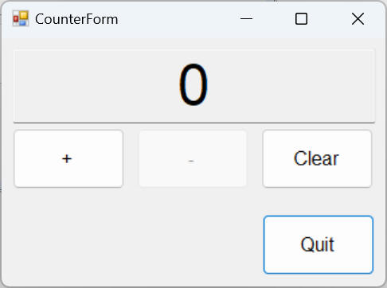
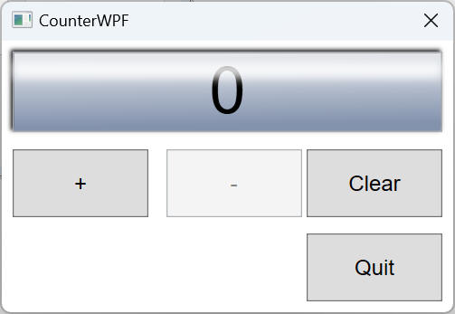
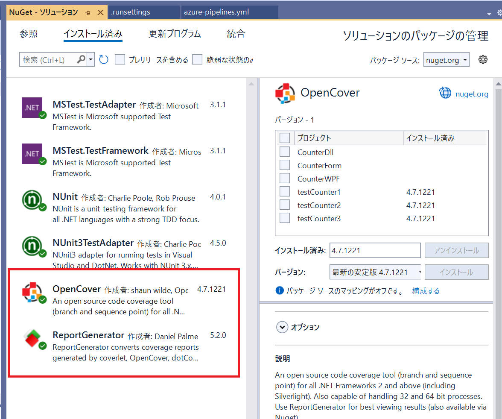
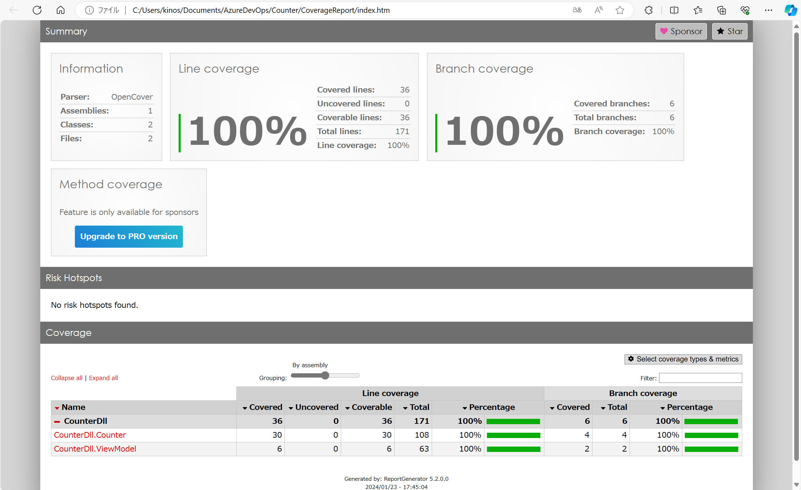
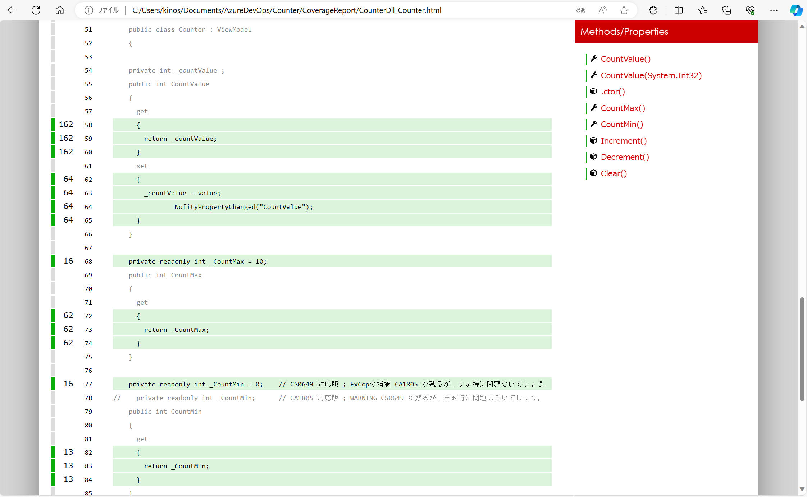

OpenCover
本ページでは OpenCover を使った .NET Framework (c#) のソースコードカバレッジ計測の方法について記載します。
OpenCover は、.NET 2 以上（Windows OSのみ - MONOを除く）に対応したコードカバレッジツールです。32ビットと64ビットのプロセスをサポートし、ブランチとシーケンスポイントの両方をカバーします。
OpenCover を実行する対象プロジェクトを作成します。
ここでは以下のようなテストプロジェクトを作成して進めました。
[環境]
|
| コンパイラ : |
Visual Studio 2022, |
Version 17.8.4 |
|
| 開発言語: |
c# |
|
|
| フレームワーク： |
.NET Framework 4.8 |
|
|
| テストフレームワーク： |
MSTest.TestAdapter, |
3.1.1 |
|
| |
MSTest.TestFramework, |
3.1.1 |
|
| |
NUnit, |
4.0.1 |
|
| |
NUnit3TestAdapter, |
4.5.0 |
|
| OS : |
Windows11 home, |
23H2 |
|

代表的な Unit テストフレームワーク（NUnit、MSTestV1、MSTestV2）によるユニットテストを準備してみます。
[Table.] 各プロジェクトの説明
| プロジェクト名 |
内容 |
| CounterDll |
値（Integer）を管理する class Counter を提供する dll。
class Couter
は、Increment, Decrement, Clear ３つのメソッドを持つ。 |
| CounterForm |
class Counter を使った WinForm アプリ。 |
| CounterWPF |
class Counter を使った WPF アプリ。 |
| testCounter1 |
CounterDll をテストする。NUnt 版。 |
| testCounter2 |
CounterDll をテストする。MSTestV1 版。 |
| testCounter3 |
CounterDll をテストする。MSTestV2 版。 |
Visual Studio 上の画面の様子です。16個のテストを全て成功しています。

図： CounterForm 画面例

図： CounterWPF 画面例

以上で事前準備を完了です。
NuGet を使って下記２つのパッケージを追加します。
- OpenCover
- ReportGenerator

環境情報を以下に記載します。
[環境]
|
| コンパイラ : |
Visual Studio 2022, |
Version 17.8.4 |
|
| 開発言語: |
c# |
|
|
| フレームワーク： |
.NET Framework 4.8 |
|
|
| テスト： |
MSTest.TestAdapter, |
3.1.1 |
|
| |
MSTest.TestFramework, |
3.1.1 |
|
| |
NUnit, |
4.0.1 |
|
| |
NUnit3TestAdapter, |
4.5.0 |
|
| |
OpenCover |
4.7.1221 |
|
| |
ReportGenerator |
5.2.0 |
|
| OS : |
Windows11 home, |
23H2 |
|
"OpenCover.Console.exe" から "vstest.console.exe"
を実行してテストを実行し、カバレッジ計測を行います。
そして出力されたカバレッジ計測結果を "ReportGenerator.exe" を使って HTML
レポートを作成します。
作成したバッチファイル例を記載します。
["OpenCover.bat"]
rem Microsoft Visual Studio 2022 環境設定
call "C:\Program Files\Microsoft Visual Studio\2022\Community\Common7\Tools\VsDevCmd.bat"
rem OpenCoverの実行
.\packages\OpenCover.4.7.1221\tools\OpenCover.Console.exe -register:Path64 -target:"vstest.console.exe" -targetargs:"./testCounter*/bin/debug/testCounter*.dll" -targetdir:"." -filter:"+[CounterDll]*" -output:OpenCoverReport.xml
rem OpenCover の出力レポートを整形出力
.\packages\ReportGenerator.5.2.0\tools\net47\ReportGenerator.exe -reports:".\OpenCoverReport.xml" -reporttypes:html -targetdir:".\CoverageReport"
rem レポートを表示
.\CoverageReport\index.html
pause
[Table: OpenCover パラメータについて説明]
| パラメータ |
説明 |
| -target |
OpenCover が実行するアプリケーションを指定します。今回は "VSTest.console.exe" を指定しています。 |
| -register |
"Path64" または "Path32" を指定します。この指定に従って
"OpenCover.Console.exe" と同じディレクトリにある {x86/x64}\OpenCover.Profile.dll
を使い分けるようです。 |
| -targetargs |
"-target" で指定したアプリケーションに対する引数を指定します。
上記例では "VSTest.console.exe"
の引数としてテストプロジェクトの dll ファイルをワイルドカードを使って指定しています。 |
| -targetdir |
テストプロジェクトの dll があるディレクトリを指定します。ここで指定した場所からの相対パスで扱われる、と思われるので本例では
"." を指定してみました。 |
| -returntargetcode |
これを指定すると、"-target" で指定したアプリケーションからの戻り値を OpenCover の戻り値として扱います。 |
| -output |
カバレッジ情報を出力する XML ファイル名を指定します。上記例では "OpenCoverReport.xml"
というファイル名を指定しています。 |
| -filter |
カバレッジ結果にアセンブリとクラスを選択的に含めたり除外したりするために適用するフィルターのリストを指定します。
本例では "CounterDll" というアセンブリに含む全てのクラスを対象として指定しています。
書式については
OpenCover の資料 や様々なインターネット記事を参照してください。 |
[Table: reportgenerator 引数について]
| パラメータ |
説明 |
| -reports |
OpenCover が出力した解析結果（XMLファイル）を指定します。
本ページ例では
".\OpenCoverReport.xml" を指定します。 |
| -targetdir |
結果を出力するディレクトリを指定します。
本ページ例では
".\CoverageReport" を指定します。 |
| -reporttypes |
出力するレポートタイプを指定します。複数指定することが可能です。
本ページ例では
"html" を指定します。
指定できるタイプはとてもたくさんあります。こちら
を参照。 |
ReportGenerator に関する参照ページ：
上記バッチファイルを実行した様子の例です。

出力されたレポート例です。

上図のクラス名（赤字部分）をクリックすると、下図のようなカバレッジ詳細を閲覧することができます。

本ページの情報は、特記無い限り下記 MIT ライセンスで提供されます。
The MIT License (MIT)
Copyright 2024 Kinoshita Hidetoshi
Permission is hereby granted, free of charge, to any person obtaining a copy
of this software and associated documentation files (the "Software"), to deal
in the Software without restriction, including without limitation the rights
to use, copy, modify, merge, publish, distribute, sublicense, and/or sell
copies of the Software, and to permit persons to whom the Software is
furnished to do so, subject to the following conditions:
The above copyright notice and this permission notice shall be included in all
copies or substantial portions of the Software.
THE SOFTWARE IS PROVIDED "AS IS", WITHOUT WARRANTY OF ANY KIND, EXPRESS OR
IMPLIED, INCLUDING BUT NOT LIMITED TO THE WARRANTIES OF MERCHANTABILITY,
FITNESS FOR A PARTICULAR PURPOSE AND NONINFRINGEMENT. IN NO EVENT SHALL THE
AUTHORS OR COPYRIGHT HOLDERS BE LIABLE FOR ANY CLAIM, DAMAGES OR OTHER
LIABILITY, WHETHER IN AN ACTION OF CONTRACT, TORT OR OTHERWISE, ARISING FROM,
OUT OF OR IN CONNECTION WITH THE SOFTWARE OR THE USE OR OTHER DEALINGS IN THE
SOFTWARE.